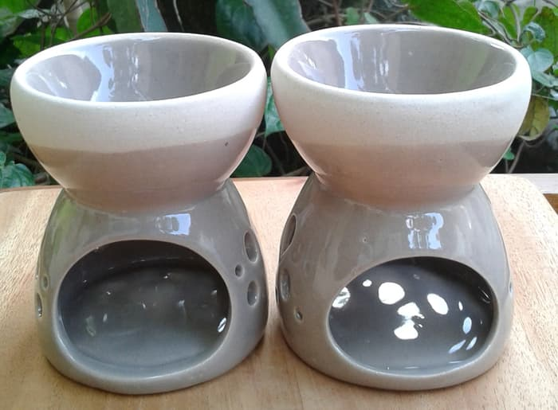

Tahap Pembuatan Keramik
A. Persiapan Tanah Liat
-
Pengulian (Kneading)
Proses pengulian tanah liat dimaksudkan agar tingkat keplastisan dan homogenitas merata serta bebas dari gelembung udara. Proses pengulian dapat dilakukan dengan gerakan spiral sebagai berikut:
-
Tanah liat diangkat ke atas kemudian ditekan ke bawah menggunakan telapak tangan, kemudian didorong ke depan.

-
Lakukan proses seperti di atas beberapa kali untuk memastikan bahwa keseluruhan tanah liat bercampur secara homogen.

-
Tanah liat diangkat ke atas kemudian ditekan ke bawah menggunakan satu tangan secara terus menerus, cara ini menunjukkan gerakan pengulian spiral.

-
Pengulian silang merupakan cara terbaik untuk mencampur dua atau lebih tanah liat warna. Lakukan pengulian silang lapisan tanah liat yang mencampur dua atau lebih bahan yang berbeda.

-
Lakukan pengulian dua tanah liat yang berbeda warna tersebut secara berulang-ulang hingga tercampur merata, seperti ditunjukkan pada bagian irisan selama pengulian.

-
Pengirisan(Weadging)
Proses pengirisan tanah liat dilakukan untuk mencampur satu macam tanah atau lebih yang berbeda warna, jenis, dan plastisitasnya. Proses pengirisan dilakukan sebagai berikut:
-
Bongkahan tanah liat dipotong menjadi setengah bagian menggunakan kawat pemotong.

-
Satu bagian tanah liat tersebut diangkat dan banting di atas bagian potongan tanah liat lainnya.

-
Lakukan proses mengiris dan membanting tanah liat berulangulang. Proses ini membantu mencampur dan menghilangkan udara.

-
Bila sudah merasa cukup, irislah tanah liat. Bila proses ini berjalan bagus maka bagian irisan tanah liat menampakkan campuran merata dan bebas udara.

B. Teknik Pembuatan Keramik
-
Tahap pembuatan teknik pijit (Pinching)
|
1. Alat
|
- Butsir kawat
- Buitsir Kayu
- Alas Pembentuk
- Meja putar (banding wheel)
|
- spons busa
- mangkuk
- pisau
- kain terpal atau goni
|
|
2. bahan
|
- tanah liat plastis
|
|
3. Proses pembuatan
|

- Ambil tanah liat secukupnya, buatlah bola padat, kemudian tekan pusat bola dengan ibu jari.

- Lakukan penekanan dengan ibu jari secara memutar pada dinding benda diawali dari bawah terus naik sampai pada bagian bibir benda.

- Lakukan pemijitan secara menyeluruh hingga terbentuk benda yang diinginkan.

- Rapikan bagian luar badan benda agar tampilan tampak selesai.

- Tampilan kesan ‘selesai’ dilihat dari samping dan atas.
-
Tahap pembuatan teknik pilin (Coiling)
|
1. Alat
|
- Butsir kawat
- Buitsir Kayu
- Rib
- Kawat Pemotong
- Spon Busa
- Kuas
- Jarum
|
- Pisau
- Banding Wheel
- Alas Pembentukan
- Mangkok
- Kain Terpal
- Hand Extruder
|
|
2. bahan
|
- tanah liat plastis
- slip tanah liat
|
|
3. Teknik Membuat Pilinan Tanah Liat
|

- Membuat Pilinan dengan Bantuan Alas Meja Kerja

- Membuat Pilinan dengan Tangan Secara Langsung

- Membuat Pilinan dengan Hand Extruder
4. Proses Pembuatan

- Ambil dan potong tanah liat plastis yang sudah diperam menggunakan kawat pemotong.

- Uli tanah liat tersebut di atas meja pengulian hingga benarbenar homogen dan bebas dari gelembung udara, lakukan juga dengan pengirisan (wedging).

- Tempatkan papan landasan pada banding wheel, kemudian buatlah lempengan tanah liat dnah liat yang dipipihkan dengan cara ditekan-tekan menggunakan tangan.

- Putar banding wheel pelan-pelan menggunakan tangan kiri dan potong lempengan tanah liat menjadi bentuk lingkaran untuk alas benda menggunakan jarum. Ambil sisa-sisa potongan dari atas banding wheel.

- Gores bagian tepi lempengan berbentuk lingkaran menggunakan jarum kemudian olesi dengan slip tanah liat menggunakan kuas.

- Buatlah beberapa pilinan tanah liat menggunakan kedua telapak tangan di atas meja kerja, lakukan dengan teliti agar pilinan tersebut memiliki diameter yang relatif sama.

- Gores bagian pilinan tanah liat yang akan dirangkai dan olesi dengan slip

- Tempatkan pilinan tanah liat pada bagian tepi lempengan berbentuk lingkaran, kemudian tekan-tekan agar menyatu dengan kuat. Potong pilinan tanah liat apabila sisa dengan cara memotong miring dan stukan sambungan pilinan tersebut.

- Tambahkan beberapa pilinan tanah liat di atas pilinan tanah liat yang sudah dirangkai hingga membentuk silinder.

- Buatlah pilinan tanah liat kemudian satukan di atas piliinan yang telah dirangkai dengan bentuk yang bervariasi, tekan agar sambungan pilinan menjadi kuat. Buatlah bentuk yang bervariaisi untuk menambah keindahan benda yang dibuat.

- Buatlah bola-bola kecil tanah liat untuk menambah variasi pada bentuk silinder pilinan yang dibuat. Rangkaikan bola-bola tanah liat tersebut pada benda keramik. Bentuk pilinan dan bola-bola tanah liat juga dapat berfungsi sebagai dekorasi.

- Tambahkan pilinan tanah liat yang seklaigus berfungsi sebagai bibir benda silinder. Rapikan seluruh permukaan benda yang dibuat menggunakan kayu kemudian haluskan dengan spon.

- Potong dasar benda menggunakan kawat pemotong, kemudian lepaskan papan landasan dari atas banding wheel.

- Angkat dan letkkan pada rak pengering karya, agar menjadi kering sebelum dijemur di panas matahari.
-
Teknik pembentukan teknik lempeng (Slab)
|
1. Alat
|
- Butsir kawat
- Buitsir Kayu
- Spon Busa
- Kawat Pemasang
- Pisau
- Jarum
- Kuas
|
- Gunting/cutter
- Roll Kayu
- Penggaris
- Mangkuk
- Papan Landasan(alas pembentukan)
- Meja Putar
- Kain Terpal
|
|
2. bahan
|
- tanah liat plastis
- slip tanah liat
|
|
3. Proses pembuatan
|

- Buatlah lempengan tanah liat menggunakan roll kayu.

- Buatlah pola secara langsung atau pola dari karton di atas lempengan tanah.

- Potonglah lempengan tanah liat sesuai pola dengan menggunakan pisau secara tegak lurus atau dengan sudut 45 derajat pada sisi bagian yang akan disambung menggunakan pisau dengan bantuan papan guide block.

- Goreslah sisi bagian yang akan disambung menggunakan jarum kemudian olesi dengan slip bubur tanah liat menggunakan kuas.

- Letakkan bagian-bagian yang akan digabungkan pada posisi masing-masing.

- Sambungkan masing-masing bagian benda yang dibuat secara bertahap.

- Berilah pilinan tanah liat pada bagian sambungan lempengan, tekan dan rapikan menggunakan butsir kayu.

- Sempurnakan bentuk kotak yang telah jadi dengan merapikan sisisisi permukaannya. Untuk memberikan sentuhan dekorasi atau hiasan dapat dilakukan dengan memberi tekstur cap, tempel ataupun gores pada sisi permukaan dindingnya. Anginanginkan hingga kering dan siap untuk dibakar biskuit.
-
Teknik pembentukan teknik putar (Centering)
|
1. Alat
|
- Butsir kawat
- Butsir Kayu
- Ribbon Tool
- Kaliper/jangka lengkung
- Kawat Pemotong
- Throwing stick
- Spon
- Pallets
|
- Sponge Stick
- Jarum
- Penggaris
- Kain Terpal
- Papan Landasan
- Ember/baskom
- Alat Putar Manual
- Alat Putar Masinal
|
|
2. bahan
|
- tanah liat plastis
|
|
3. Fungsi Tangan dalam Pembentukan Teknik Putar
|
Proses pembentukan benda keramik di atas alat putar menggunakan tangan merupakan rangkaian gerakan yang komplek dengan berbagai posisi. Gerakan tangan ini harus terus menerus diulang-ulang agar menjadi suatu gearkan insting. Latihan yang berulang-ulang tersebut akan memberikan pengalaman yang sangat membantu untuk menemukan gerakan naluri dalam membuat benda keramik. Mulailah latihan membuat benda keramik dengan bentuk benda yang sederhana.
Hal lain yang juga perlu diperhatikan adalah membiasakan latihan dengan menggunakan jenis bahan tanah liat yang berbeda-beda.
 Fungsi bagian bagian tangan adalah sebagai berikut
Fungsi bagian bagian tangan adalah sebagai berikut
- Dasar telapak tangan (base of the palm) untuk menekan tanah liat ke bagian tengah dan meratakan tanah liat dalam jumlah banyak pada waktu membuat priring.
- Ibu jari (thumb) untuk membuka gumpalan tanah liat, mengecek bagian atas, dan untuk memijit (dengan telunjuk).
- Jari telunjuk (index finger) digunakan untuk melebarkan benda kerja.
- Ruas jari-jari (knuckle) digunakan untuk meratakan bagian dalam piring dan menarik tanah liat ke atas serta menipiskan.
- Ujung jari (fingertip) untuk memberi tekanan pada tanah liat dan berfungsi untuk memberikan bentuk.
- Rongga telapak tangan (hollow of the palm) untuk memberi tekanan ke bawah pada tanah liat selama memusatkan tanah liat.
4. Proses Pembuatan
- Centering
Tahap pemusatan tanah liat plastis di atas putaran dengan cara menekan tanah liat. Penekanan dilakukan dengan menggunakan kedua tangan, tangan yang satu menekan dari atas dan tangan lain menahan pada bagian samping. Tahap ini harus dikuasai dengan benar karena akan berpengaruh pada tahap selanjutnya.

- Conning
Tahap pembentukan tanah liat seperti kerucut (cone). Caranya dengan menekan tanah liat pada bagian samping menggunakan kedua tangan, kemudian menekan kerucut tanah liat ke bawah sehingga membentuk seperti mangkok terbalik, lakukan tahap ini beberapa kali.
- Opening dan Raising
Tahap melubangi (open up) dan menaikkan tanah liat (pulling up) atas dengan tangan yang di dalam menekan kearah luar, sedangkan tangan yang di luar menahan sehingga membentuk silinder.

- Forming
Tahap membentuk (shaping) ini sangat penting karena tahap pembentukan benda keramik menjadi bentuk yang diinginkan sesuai gambar kerja. Pembentukan dilakukan dengan menggunakan kedua tangan dan pada tahap ini diperlukan keterampilan tangan untuk membentuk tanah liat menjadi benda keramik.

- Refining the Contour
Tahap ini adalah tahap pengecekan atau pengontrolan dari sisi bentuk dan ukuran benda keramik yang dibuat. Pengecekan menggunakan penggaris untuk mengukur tinggi dan kaliper/jangka lengkung untuk mengukur diameter.

- Finishing
Tahap ini adalah tahap penyelesaian pembentukan benda keramik, yaitu meratakan permukaan benda dengan menggunakan alat butsir, scraper, atau ribbon kemudian menghaluskan dengan spon. Pada kondisi benda setengah kering (leather hard) lakukan pengikisan (trimming/turning), pada bagian dasar benda keramik, dan buatlah kaki benda.

-
Teknik pembentukan teknik cetak
|
1. Alat
|
- Buitsir Kayu
- Pisau
- Kuas
- Spon
- Alas Pembentukan
- Baskom
- Ember
|
- Timbagnan
- Banding Wheel
- Papan Cetakan
- Sekop
- Gelas Ukur
- Kertas Ampelas Waterproof
|
|
2. bahan
|
- tanah liat plastis
- slip tanah liat
- tanah liat model
- gips
- larutan pemisah
|
|
3. Proses pembuatan
|
- Penyiapan gips

- Tuang air bersih ke dalam ember plastik menggunakan gelas ukuran sesuai dengan ukuran atau volume yang telah ditentukan sesuai kebutuhan.

- Timbang berat bahan gips dengan menggukan timbangan yang sesuai dengan perbandingan berat atau volume air yang telah ditentukan.

- Taburkan gips yang telah ditimbang secara merata ke dalam ember yang telah berisi air, lakukan secara bertahap sedikit demi sedikit dengan gips masih berbentuk tepung.

- Masukkan gips ke dalam air hingga tampak sedikit gips muncul di atas permukaan air, biarkan hingga 1-2 menit, agar air meresap dalam gips.

- Aduk menggunakan tangan secara pelan-pelan hingga ke bagian dasar agar gips tersebut tercampur rata dengan air menjadi adonan gips yang hangat.

- Kontrol kepekatan adonan gips tersebut, usahakan jangan terlalu cair atau sebaliknya terlalu pekat sehingga adonan gips siap di tuang dalam cetakan.
- Pembentukan

- Ambil tanah liat model letakkan di atas papan landasan pada banding wheel.

- Buatlah model secara global menggunakan tanah liat model.

- Bentuklah model secara detail pada tiap bagiannya kemudian haluskan menggunakan spon.

- Model cetakan satu sisi untuk teknik cetak tekan (padat) yang telah selesai dan siap dicetak.

- Letakkan model pada papan landasan, kemudian olesi dengan larutan pemisah agar model mudah dilepaskan dari cetakan gips.

- Pasang papan cetakan pada keempat sisi model, dengan jarak kurang lebih 4 cm dari model. Kemudian berilah tanah liat plastis pada bagian sambungan papan cetakan agar adonan gips tidak keluar.

- Buatlah adonan gips untuk membuat cetakan gips.

- Tuang adonan gips pada model, lakukan dengan hati-hati agar seluruh permukaan model tertutup adonan gips dengan rata, biarkan adonan gips tersebut mengeras.

- Buka papan cetakan setelah gips mengeras, kemudian rapikan selruh permukaan cetakan gips tersebut.

- Lepaskan model topeng tersebut dari cetakan gips, cuci cetakan gips hingga benar-benar bersih kemudian jemur gga kering dan siap untuk digunakan.

- Cetakan gips yang sudah jadi dan siap digunakan untuk mecetak benda keramik.

- Siapkan bahan tanah liat plastis dan homogen yang sudah diuli.

- Letakkan cetakan pada papan landasan di atas banding wheel, masukkan tanah liat plastis ke dalam cetakan topeng, kemudian tekan pelan-pelan agar tanah liat tersebut masuk pada bagian cetakan gips.

- Tekan pelan-pelan tanah liat plastis tersebut secara merata pada bagian cetakan gips, bentuk bagian dalam benda mengikuti bentuk cetakan agar benda hasil cetakan memiliki ketebalan yang relatif sama.

- Lepaskan benda keramik hasil cetakan dari cetakan gips.

- Angin-anginkan benda hasil cetakan kemudian keringkan agar siap dibakar biskuit.
-
Teknik pembentukan teknik jigger-jolley
|
1. Alat
|
- Mesin jigger-jolley
- Pisau Bubut
- Papan Landasan
|
|
2. bahan
|
- Tanah liat plastis earthenware atau stoneware
|
|
3. Proses pembuatan
|
Alat jigger-jolley manual dapat langsung digunakan untuk membentuk benda keramik apabila catakan gips dan profile sudah disediakan, apabila gips dan profile belum tersedia maka perlu dibuat model dan cetakan dari bahan gips kemudian membuat profile, setelah selesai baru membentuk benda keramik. Proses pembentukan benda keramik berupa piring besar dengan alat jigger-jolley manual yang digerakkan dengan kaki.

- Siapkan tanah liat dalam kondisi plastis dan homogen.

- Buatlah lempengan tanah liat menggunakan roll dan bilah kayu dengan ketebalan dan diameter yang sesuai untuk cetakan piring.

- Siapkan alat jigger manual, tempatkan cetakan piring pada dudukan cetakan dan pasang profile atau pisau pembentuk yang digunakan. Atur

- Tempatkan tanah liat plastis yang telah diuli tersebut ke dalam cetakan piring.

- Tekan lempengan tanah liat dengan tangan hingga menempel pada cetakan piring.

- Ratakan dan haluskan lempengan tanah liat menggunakan spon basah.

- Putar cetakan jigger pelan-pelan, kemudian turunkan handel profile hingga lempengan tanah liat terkikis. Bersihkan sisa-sisa tanah liat yang menempel pada profile.

- Lakukan pembentukan piring dengan jigger sesuaikan dengan ukuran stop (baut. pembatas) sehingga membentuk piring sesuai dengan ukurannya.

- Naikkan handel profile kemudian sambil jigger diputar, potong kelebihan tanah liat pada bibir piring menggunakan butsir kawat.

- Putar jigger dan lakukan pengikisan tanah liat hingga mencapai ketebal yang sesuai dengan ukurannya atau sesuai dengan stop (baut pembatas).

- Setelah selesai, angkat cetakan piring dengan hati-hati dan tempatkan pada rak pengering.

- Angin-anginkan hingga tanah liat menjadi cukup kering agar mudah dilepas dari cetakannya.

- Lepaskan piring dari cetakan gips setelah benar-benar kering.

- Keringkan piring tersebut untuk siap di bakar biskuit.
C. Tahap Pembakaran
Tahap pembakaran dilakukan untuk merubah dari sifat tanah liat yang lunak menjadi padat dan kuat. Tahap pembakaran membakar benda-benda keramik yang disusun di dalamnya dan dibakar dengan menggunakan bahan bakar khusus (kayu, batu bara, minyak, gas, atau listrik) sampai semua panas menyebar dan membakar semua yang ada di dalam tungku itu. Pembakaran atau radiasi panas berlangsung di dalam tungku atau di bawah ruang bakar dan kelebihan asap keluar melalui saluran api atau cerobong tungku. Sirkulasi panas harus dibiarkan secara merata dan bebas di sekeliling benda pada saat dibakar.
D. Tahap Pengglasiran
Glasir merupakan material yang terdiri dari beberapa bahan tanah atau batuan silikat dimana bahan-bahan tersebut selama proses pembakaran akan melebur dan membentuk lapisan tipis seperti gelas yang melekat menjadi satu pada permukaan badan keramik.

Glasir merupakan kombinasi yang seimbang dari satu atau lebih oksida basa (fux), oksida asam (silika), dan oksida netral (alumina), ketiga bahan tersebut merupakan bahan utama pembentuk glasir yang dapat disusun dengan berbagai kompoisisi untuk suhu kematangan glasir yang dikehendaki.
Tahap penglasiran memiliki fungsi untuk melindungi, memperkokoh serta memperindah keramik. KeramiK yang telah melewati penglasiran perlu untuk melewati tahap pembakaran glasir terlebih dahulu sebelum digunakan.